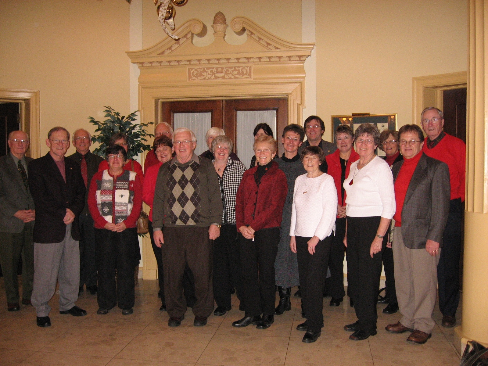

Newsletter No. 79 from January 6, 2008, is a brief seasonal greeting from Don Glendenning as editor. The message thanks the "Foundation family" of directors, staff, volunteers, and donors for another productive year and extends best wishes for 2008. A photograph shows attendees at the Foundation's annual Christmas luncheon held December 12, 2007, at the Charlottetown Hotel. The newsletter conveys gratitude and team spirit characteristic of Don's editorial voice, treating CFPEI as an extended community working together toward common charitable goals.

No. 79 January 6, 2007

Foundation Family at our Annual Christmas Luncheon
December 12, 2007 at the Charlottetown Hotel
GREETINGS to readers scattered across the continent most of whom have an Island connection
THANKS to the Foundation family, Directors, staff, volunteers and donors for another good year
BEST WISHES to all for 2008
Don Glendenning
Editor
PEACE JOY GOOD WILL LOVE